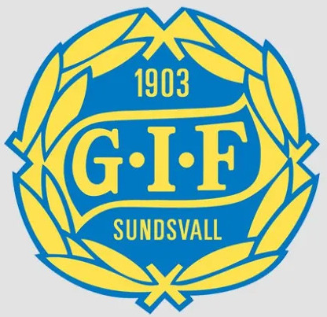

OM GIFFERS
Välkommen till GIFFERS - sportrestaurangen där fotbollspassion och god mat möts!
Här får du ta del av vår resa från idé till verklighet, i samarbete med GIF Sundsvall.
Lär känna historien bakom klubben, platsen och människorna som gör GIFFERS till något unikt.

Vår idé
Grundaren Helmer Bergström hade tidigt under år 2024 en idé om att skapa en sportrestaurang nära NP3 Arena, platsen
där GIF Sundsvall spelar sina hemmamatcher. Idén förblev en idé tills början av 2025. Idén förblev densamma tills GIF Sundsvall knackade på dörren.
GIF Sundsvall, som även kallas Giffers, skulle ta Helmers idé till verklighet. Föreningen skulle även i detta skede
erbjuda uthyrning av en lokal, och inte vilken lokal som helst, utan den tomma lokalen bakom arenans södra läktare.
"Lokalen har ekat tom sedan långt tillbaka och suktade efter nytt liv." - Bosse Andersson, arenaansvarig.
Ungefär 6 månader senare, har vi öppnat dörrarna till restaurang GIFFERS och det gör vi i ett samarbete med GIF Sundsvall.
Historia
GIF Sundsvall bildades 1903 och är sedan 1950-talet mest känd som en elitfotbollsklubb med totalt 20 säsonger i högsta serien,
Allsvenskan (till och med 2022) och 45 säsonger i näst högsta serien (till och med 2024).
När norrländska lag (norr om Gästrikland och Dalarna) 1953 fick möjlighet att tävla nationellt tog GIF direkt plats i
division 2 (näst högsta serien). Klubben kvalade flera gånger till Allsvenskan och lyckades 1964 ta sig upp i högsta serien
och därmed öppna “Norrlandsfönstret” för första gången. I den sista matchen i kvalserien, som spelades på neutral plan på
Råsunda i Solna, besegrades Öster med 2-0 inför 29 708 åskådare. Den första säsongen i Allsvenskan 1965 slutade med en
vinst och fem oavgjorda matcher. Segern kom mot Hammarby hemma, 3-1.
GIF Sundsvall grundades den 25 augusti 1903 på Mathilda Anderssons café på Köpmangatan 34 i Sundsvall av en grupp
idrottsintresserade och nykterhetsivrande ungdomar. Samma år invigdes klubbens hemmaplan Idrottsparken, numera NP3 Arena.
Nutid
GIF Sundsvall befinner sig nu i Superettan, den näst högsta divisionen i Sverige. Lagets tränare heter Erol Ates och klubbchefen
heter Karl Ståhl. GIF Sundsvall har förutom ett framgångsrikt A-lag, en väldigt framgångsrik akademi. NP3 Arena ligger centralt i
staden Sundsvall på adressen:
Universitetsallén 6, 852 34 Sundsvall
GIFFERS hittar ni på samma adress. Ingången hittar ni bakom södra läktaren. Arenan har en stor fotboll på taket
där södra och östra läktaren möts. Det går inte att missa!